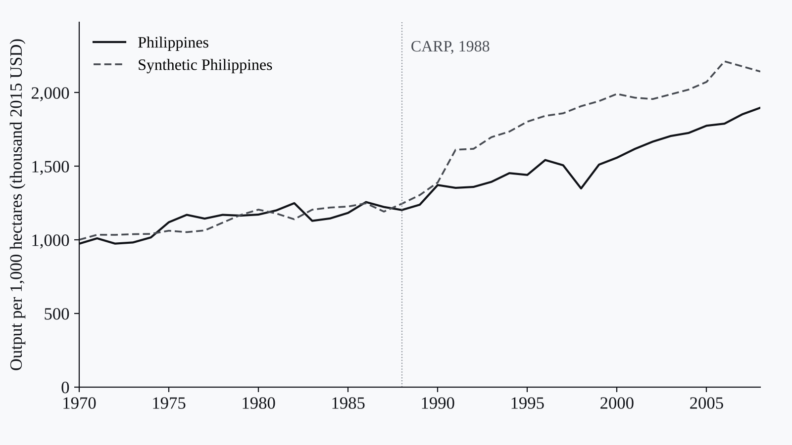
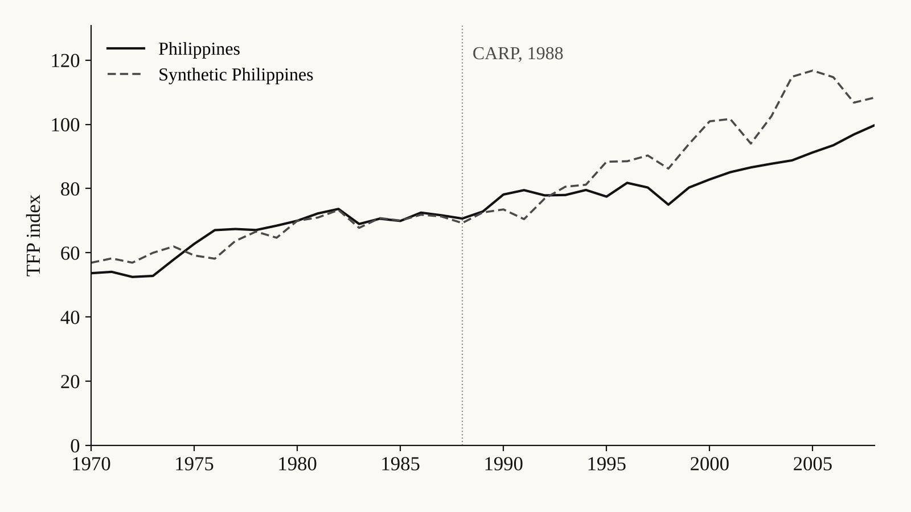
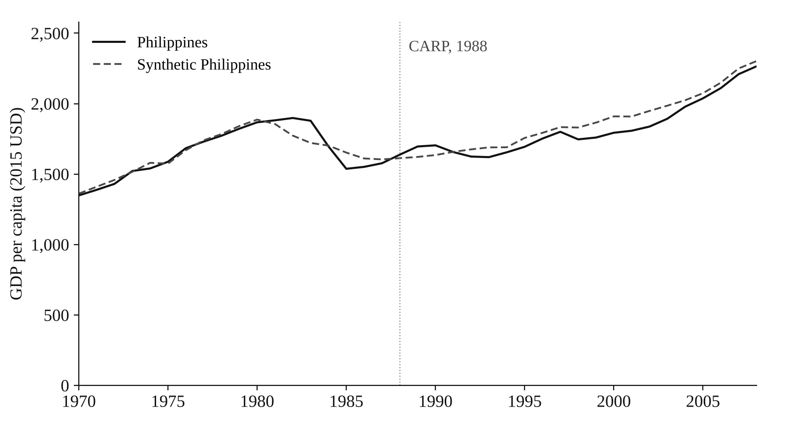

Projects · Agricultural economics · Synthetic control method · Impact evaluation
CARP and Agricultural Productivity: A Synthetic Control Study
A synthetic control evaluation of how the 1988 agrarian reform program affected Philippine labor productivity, land productivity, and TFP.

Context
The Comprehensive Agrarian Reform Program (CARP), launched in 1988, is central to Philippine debates on equity and rural development, but its effect on national agricultural productivity is rarely tested against a credible counterfactual.
Data
National agricultural productivity series from 1970 to 2008 for the Philippines and a donor pool of countries that did not implement similar land reforms.
Method
I used the synthetic control method (SCM) to build a “synthetic Philippines” that matches pre-1988 productivity trends, then compared post-reform labor productivity, land productivity, and TFP. A GDP per capita placebo checked whether the gaps were specific to agriculture.
Output
A co-authored research paper, reproducible R Markdown modules for each outcome, and counterfactual gap charts.
Findings
From 1989 to 2008, Philippine agriculture ran below its synthetic control: labor productivity was about 18.2% lower, land productivity 16.1% lower, and TFP about 9% lower. GDP per capita showed only a 2.5% gap, so the shortfall is specific to agriculture and driven mainly by slower TFP growth.
Reflection
The study covers CARP up to 2008, so it excludes CARPER and later reforms and cannot separate the effects of individual program components. Extending the window and splitting those components is the natural next step.
Figures


